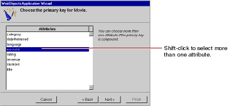

Table of Contents
Table of Contents  Next Section
Table of Contents
Next Section
Table of Contents  Previous Section
Previous Section
However, if primary key information isn't specified in your database server's schema information (as with Microsoft Access), the wizard now asks you to specify a primary key for each entity.

MovieRole's primary key is compound; that is, it's composed of more than one attribute. Use a compound primary key when any single attribute isn't sufficient to uniquely identify a row. For MovieRole, the combination of the movieId and talentId attributes is guaranteed to uniquely identify a row.
Table of Contents Next Section